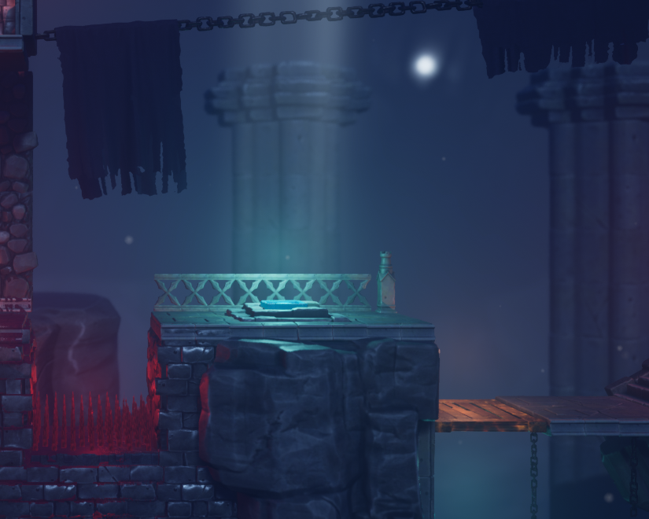
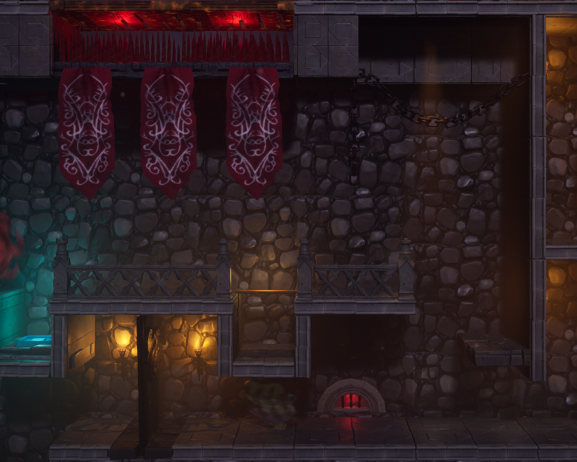

BEPPUS
BEPPUS is a game where Lemmings meets Oddworld: Abe’s Oddysee. Similar to Lemmings, the minions in BEPPUS have no will of their own & will walk back & forth until they encounter a wall or fall off a cliff.
Meanwhile taking inspiration from Oddworld, you can take individual control over a minion to perform specialized tasks by using special abilities that often end with a gruesome result in order to get to the goal of the level.
Our 4th game project in school, we were tasked to create a 20 minute platforming experience.
In this project, we didn't have any dedicated artists so we got a budget to buy assets from the Unreal Marketplace.
Engine: Unreal Engine 4.27
Genre: Platformer, Puzzle
Team Size: 6
Role: Level Design
Platform: PC


RESPONSIBILITIES
Level Design
- Create tutorial levels that taught the player the game's mechanics
User Interface Design
- Sketched Main Menu & in game menu elements
- Worked closely with a programmer in implementing the menu elements

Level Design
Creating Tutorial Levels
The tutorial levels are built around introducing 1 or 2 abilities at once, so that the player doesn't get overwhelmed with information
Flexible Level Design Process
Being flexible & adjustable during the process was a necessity.
Tutorial Level 1
This level started out as the 2nd tutorial level where it was meant to introduce how to use a mechanic/ability called "Portal".
What the "Portal" ability did was when the player click on a "minion" while having the "Portal" ability selected, it would turn that "minion" into a portal.
To make the portal working, the player would need to use 2 "minions" in order to create 2 points where "minions" could teleport between.
Later on in development, one of the tutorial levels were scrapped, combining this level into introducing how movement and creating "Portals" works into one.
Tutorial Level 2
This level started out as the 3rd tutorial level where it was meant to introduce how to use a mechanic/ability called "Blob".
What the "Blob" ability did was when the player clicked on a "minion" while having the "Blob" ability selected, it would turn that "minion" into a fleshy cube.
That cube (or Blob as we call it) could be used to break certain platforms, be used as a platform for the "minions", break a "minions" fall or as a blocker since the "minions" moves back & forth.
Later on in development, one of the tutorial levels were scrapped, turning this level into "Tutorial Level 2".
Unused Tutorial Level
This was supposed to be the 1st tutorial level of the game, meant to teach how movement & jumping works.
I approached this level with the mindset that the one who's playing this game has never played a platformer game before.
Which was a noble thought but during development this level was scrapped in favor of using (what is now) Tutorial 1 as the level that would teach how to use portals also taught how movement works as well.
User Interface Design
In Game Menu
One of the examples where I worked closely with programmer was in the creation of the in game menu.
All of the menu items are located towards the bottom of the screen, where it doesn't take up too much space from what's happening in the level.
There are some unused menus that didn't make it in to the final version of the game.
Unused Menues
Game Over Menu
One of the menus that didn't make into the game was a "Game Over" menu.
The reason being it didn't make into the game was because we had a "Restart" button that quickly reloaded the current level & that a static menu that "paused" the game would disrupt the flow of the game.
This video shows a time-lapse of me creating the Game Over menu.
Level Complete Menu
Similar to the "Game Over" menu, the "Level Complete" menu didn't make into the final version of the game due to our solution of implementing an in-game feature where you could switch levels at will with the help of a "Level" button that made "Next Level" or choosing a specific level more accessible.
This video shows a time-lapse of me creating the Level Complete menu.